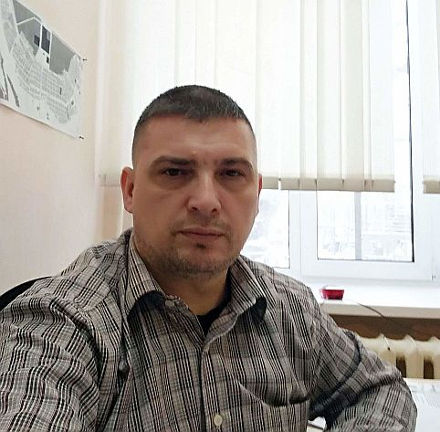

Vasiliev Yuri Vasilievich

- Viber, WatsApp: +7 (982) 4462012 preferred communication method
- email: mytem20007@gmail.com
- Skype: wascoyur
Summary: My goal is to become a web developer, this is the first stage. The future belongs to the Internet and remote
communications. I want to participate in what will help humanity to realize its purpose of existence, its mission.
I am able to learn new approaches to ordinary things, I have perseverance and self-discipline, I independently master
new directions of activity. I need a point of application of my efforts to turn the world around.
Experience
Education